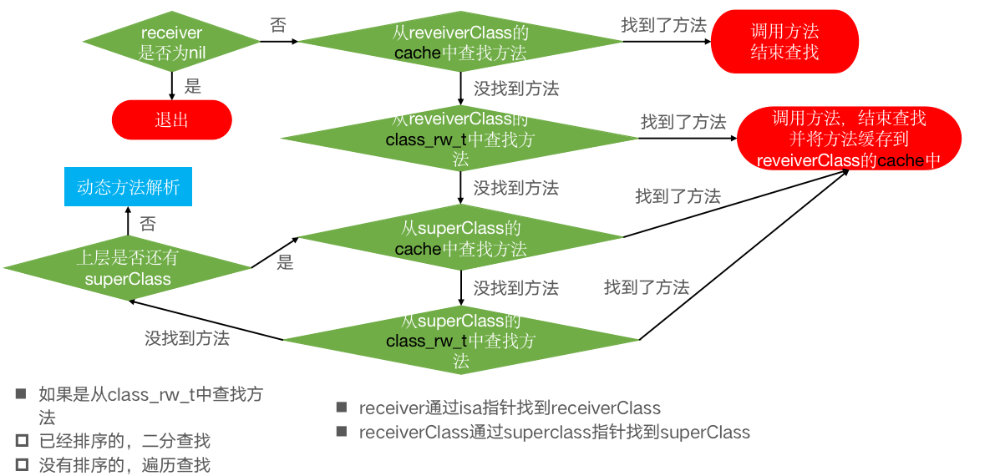
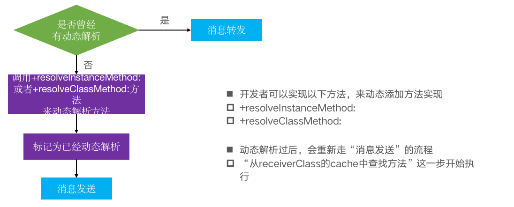

<!DOCTYPE html>


<html lang="en">
  

    <head>
      <meta charset="utf-8" />
        
      <meta
        name="viewport"
        content="width=device-width, initial-scale=1, maximum-scale=1"
      />
      <title>objc_msgSend |  ayer</title>
  <meta name="generator" content="hexo-theme-ayer">
      
      <link rel="shortcut icon" href="/favicon.ico" />
       
<link rel="stylesheet" href="/dist/main.css">

      <link
        rel="stylesheet"
        href="https://cdn.jsdelivr.net/gh/Shen-Yu/cdn/css/remixicon.min.css"
      />
      
<link rel="stylesheet" href="/css/custom.css">
 
      <script src="https://cdn.jsdelivr.net/npm/pace-js@1.0.2/pace.min.js"></script>
       
 

      <!-- mermaid -->
      
      <script src="https://cdn.jsdelivr.net/npm/mermaid@8.9.2/dist/mermaid.min.js"></script>
      
    <link rel="alternate" href="/atom.xml" title="ayer" type="application/atom+xml">
</head>
  </html>
</html>


<body>
  <div id="app">
    
      
    <main class="content on">
      <section class="outer">
  <article
  id="post-Runtime知识/objc-msgSend"
  class="article article-type-post"
  itemscope
  itemprop="blogPost"
  data-scroll-reveal
>
  <div class="article-inner">
    
    <header class="article-header">
       
<h1 class="article-title sea-center" style="border-left:0" itemprop="name">
  objc_msgSend
</h1>
 

      
    </header>
     
    <div class="article-meta">
      <a href="/2023/01/02/Runtime%E7%9F%A5%E8%AF%86/objc-msgSend/" class="article-date">
  <time datetime="2023-01-02T10:48:31.000Z" itemprop="datePublished">2023-01-02</time>
</a> 
  <div class="article-category">
    <a class="article-category-link" href="/categories/Runtime/">Runtime</a>
  </div>
  
<div class="word_count">
    <span class="post-time">
        <span class="post-meta-item-icon">
            <i class="ri-quill-pen-line"></i>
            <span class="post-meta-item-text"> Word count:</span>
            <span class="post-count">1.4k</span>
        </span>
    </span>

    <span class="post-time">
        &nbsp; | &nbsp;
        <span class="post-meta-item-icon">
            <i class="ri-book-open-line"></i>
            <span class="post-meta-item-text"> Reading time≈</span>
            <span class="post-count">5 min</span>
        </span>
    </span>
</div>
 
    </div>
      
    <div class="tocbot"></div>


  
    <div class="article-entry" itemprop="articleBody">
       
  <h1 id="objc-msgSend"><a href="#objc-msgSend" class="headerlink" title="objc_msgSend"></a>objc_msgSend</h1><blockquote>
<ul>
<li>OC中的方法调用，其实都是转换为objc_msgSend函数的调用</li>
<li>objc_msgSend的执行流程可以分为3大阶段<ul>
<li>消息发送</li>
<li>动态方法解析</li>
<li>消息转发</li>
</ul>
</li>
</ul>
</blockquote>
<h2 id="objc-msgSend源码866执行流程"><a href="#objc-msgSend源码866执行流程" class="headerlink" title="objc_msgSend源码866执行流程"></a>objc_msgSend源码866执行流程</h2><h3 id="objc-msg-arm64-s"><a href="#objc-msg-arm64-s" class="headerlink" title="objc-msg-arm64.s"></a>objc-msg-arm64.s</h3><ul>
<li>objc-msg-arm64.s<ol>
<li>MSG_ENTRY _objc_msgSend <ul>
<li>到 END_ENTRY _objc_msgSend，objc_msgSend的定义</li>
</ul>
</li>
<li>b.le    LNilOrTagged<ul>
<li>首先会判断是否时nil，为nil，则会跳转到LReturnZero直接返回，</li>
</ul>
</li>
<li>CacheLookup NORMAL<ul>
<li>不是nil,去查找缓存</li>
</ul>
</li>
<li>.macro <code>CacheLookup</code><ul>
<li>缓存命中CacheHit，直接返回IMP</li>
</ul>
</li>
<li>缓存未命中，__objc_msgLookup_uncached<ul>
<li>没找到方法，则会调用<code>MethodTableLookup</code>去查找，MethodTableLookup</li>
<li>最终调用的是C函数的方法是<code>lookUpImpOrForward(obj, sel, cls, LOOKUP_INITIALIZE | LOOKUP_RESOLVER)</code>（注意汇编中的比C函数方法多一个<code>_</code>）<h3 id="第一阶段，消息发送"><a href="#第一阶段，消息发送" class="headerlink" title="第一阶段，消息发送"></a>第一阶段，消息发送</h3></li>
</ul>
</li>
</ol>
</li>
<li>在<code>objc-runtime-new.mm</code>文件中，<code>第一个阶段</code>，查找方法<ol>
<li><code>lookUpImpOrForward</code>,未从缓存中查找的逻辑</li>
<li><code>realizeAndInitializeIfNeeded_locked</code><ul>
<li>确保类已经<code>realize</code>了</li>
</ul>
</li>
<li>for循环进行遍历查找类<code>cls</code>中方法，有个最大的数进行记录，防止陷入死循环<ol>
<li>先去<code>cache_getImp</code>从缓存中获取<ul>
<li>在查找中间的方法过程中，可能会有新方法在中间添加进来，会先加到缓存中</li>
</ul>
</li>
<li><code>getMethodNoSuper_nolock</code>、<code>search_method_list_inline</code>、<code>log_and_fill_cache</code><ol>
<li>从<code>class_rw_t的methods</code>中找到所有类和分类的方法，遍历<code>method_list_t</code>查找，因此需要类先realize</li>
<li>是排好序列的，<code>findMethodInSortedMethodList</code>中去查找方法,根据方法名查找，已经排序，<code>二分查找</code>的方式<ul>
<li>如果有相同的有很多，会倒序查找，找到排序的第一个方法</li>
<li>排序，会在<code>prepareMethodLists</code>中调用<code>fixupMethodList</code>方法<ul>
<li>method_t中方法类型有big、small、bigSigned<ul>
<li>big是默认的，大方法，其值为指针，其类型包括<code>SEL name;const char *types;MethodListIMP imp;</code></li>
<li>small，小方法，其值表示为相对每个字段的额外地址，其结构是<code>RelativePointer&lt;const void *&gt; name;RelativePointer&lt;const char *&gt; types;RelativePointer&lt;IMP, /*isNullable*/false&gt; imp;</code>,其引用的选择器在(共享缓存)或者是在磁盘上，考虑<code>相关动态库的系统方法</code>,该方法是只读内存，因此small的是无法修改的。其是否是small方法，是由编译器决定，进行设置的</li>
<li>bigSigned,和big相同，但是其name已经签名，该方法是由运行时添加的，类似<code>class_addMethod</code>方法添加的</li>
</ul>
</li>
<li>对方法排序，只会对非small的方法进行排序,排序是根据方法名<code>SEL</code>的地址由低到高排序的</li>
</ul>
</li>
</ul>
</li>
<li>不是排好序的<code>findMethodInUnsortedMethodList</code>，<code>线性遍历查找</code>，找到第一个方法名相同的，后，返回</li>
<li><code>log_and_fill_cache(cls, imp, sel, inst, curClass)</code>,查找到方法后，调用void cache_t::insert,去插入到缓存中,保存的类是最开始查找的类方法<code>cls</code>中,而并非当前的类。</li>
<li>当前<code>curClass</code>中没有找到，则会去父类遍历查找<code>curClass = curClass-&gt;getSuperclass()) == nil</code><ul>
<li>如果找到最后的父类，都没有找到方法，则会设置当前<code>imp = _objc_msgForward_impcache</code></li>
<li>或者从缓存中取到的方法，等于<code>_objc_msgForward_impcache</code>,则会跳出循环</li>
</ul>
</li>
</ol>
</li>
</ol>
</li>
</ol>
</li>
<li>消息发送流程<br><h3 id="第二阶段，动态方法解析"><a href="#第二阶段，动态方法解析" class="headerlink" title="第二阶段，动态方法解析"></a>第二阶段，动态方法解析</h3></li>
<li>log_and_fill_cache，<code>第二个阶段</code>，动态方法解析<ul>
<li><code>(behavior &amp; LOOKUP_RESOLVER) == 0</code>由最开始汇编中，传入，需要进行方法解析，则进入方法解析流程<ol>
<li> <code>behavior ^= LOOKUP_RESOLVER</code>,解析之后，就不需要了</li>
<li> <code>resolveMethod_locked(inst, sel, cls, behavior)</code>,进入方法解析流程</li>
<li>不是元类，则走<code>resolveInstanceMethod</code>方法<ol>
<li>会先去找<code>resolveInstanceMethod</code>,<code>_lookUpImpOrNilTryCache(cls, resolve_sel, cls-&gt;ISA(true))</code>先去,其isa，也就是其类类对象，缓存中找，找不到，则走<code>阶段一</code>的方法查找，这次的<code>behavior</code>不包含<code>LOOKUP_RESOLVER</code>,不会去走动态方法解析<ul>
<li> 其中NSObject中<code>+(BOOL)resolveInstanceMethod</code>会有基础实现</li>
<li> 因为后续会同步再去查询方法，因此是否返回true，不影响实际结果，但是安规范，实现了返回true</li>
</ul>
</li>
<li> 会用<code>objc_msgSend</code>调用方法</li>
<li>会再调用<code>lookUpImpOrNilTryCache(inst, sel, cls)</code>,去查找，一开始寻找的方法</li>
<li>方法的返回，最后通过调用<code>lookUpImpOrForwardTryCache</code>去查找<ul>
<li><strong>注意</strong>，用<code>lookUpImpOrNilTryCache</code>传入的<code>behavior</code>包括<code>LOOKUP_NIL</code>，即没有搜索到，会返回nil,不会出现找不到方法的异常</li>
</ul>
</li>
</ol>
</li>
<li>是元类，则会查找<code>resolveClassMethod</code>，同时，如果调用<code>lookUpImpOrNilTryCache</code>,没有找到，也会去走<code>resolveInstanceMethod</code>方法，即上面的流程(注意，此时他回去元类的isa指针，找方法，而元类的isa指针，实际上是基元类，也就是NSObjec类方法中)，解析类的方法和实例方法流程一样<ol>
<li>同样会先去找方法<code>resolveClassMethod</code>，其在NSObject中也已实现</li>
<li>会用<code>objc_msgSend</code>的方式调用</li>
<li>最终用<code>lookUpImpOrForwardTryCache</code>去查找方法</li>
</ol>
</li>
</ol>
</li>
</ul>
</li>
<li>实现代码<figure class="highlight plaintext"><table><tr><td class="gutter"><pre><span class="line">1</span><br><span class="line">2</span><br><span class="line">3</span><br><span class="line">4</span><br><span class="line">5</span><br><span class="line">6</span><br><span class="line">7</span><br><span class="line">8</span><br><span class="line">9</span><br><span class="line">10</span><br><span class="line">11</span><br><span class="line">12</span><br><span class="line">13</span><br><span class="line">14</span><br><span class="line">15</span><br><span class="line">16</span><br><span class="line">17</span><br><span class="line">18</span><br><span class="line">19</span><br><span class="line">20</span><br><span class="line">21</span><br><span class="line">22</span><br></pre></td><td class="code"><pre><span class="line">void c_other(id self, SEL _cmd)</span><br><span class="line">&#123;</span><br><span class="line">    NSLog(@&quot;c_other - %@ - %@&quot;, self, NSStringFromSelector(_cmd));</span><br><span class="line">&#125;</span><br><span class="line">- (void)other &#123;</span><br><span class="line"> NSLog(@&quot;other - %@ - %s&quot;, self, __func__);</span><br><span class="line">&#125;</span><br><span class="line">+ (BOOL)resolveClassMethod:(SEL)sel</span><br><span class="line">&#123;</span><br><span class="line">    if (sel == @selector(test)) &#123;</span><br><span class="line">        // 第一个参数是object_getClass(self)</span><br><span class="line">       // c函数 class_addMethod(object_getClass(self), sel, (IMP)c_other, &quot;v16@0:8&quot;);</span><br><span class="line">       Method method = class_getInstanceMethod(self, @selector(other));</span><br><span class="line">        class_addMethod(</span><br><span class="line">        object_getClass(self), </span><br><span class="line">        sel,</span><br><span class="line">        method_getImplementation(method), </span><br><span class="line">        method_getTypeEncoding(method));</span><br><span class="line">        return YES;</span><br><span class="line">    &#125;</span><br><span class="line">    return [super resolveClassMethod:sel];</span><br><span class="line">&#125;</span><br></pre></td></tr></table></figure></li>
<li>动态解析流程<br><h3 id="第三阶段，消息转发"><a href="#第三阶段，消息转发" class="headerlink" title="第三阶段，消息转发"></a>第三阶段，消息转发</h3></li>
<li>在<code>第二阶段</code>中，最终会用<code>lookUpImpOrForwardTryCache</code>,再去查找一次方法，这次，如果动态解析方法添加到了，则直接返回，否则不会再走解析流程，其中设置imp为<code>_objc_msgForward_impcache</code>,会跳转到该方法的实现上，该方法在<code>objc-msg-arm64.s</code>文件内，属于汇编<ul>
<li>ENTRY __objc_msgForward</li>
<li>Core Foundation</li>
<li>__forwarding__（不开源）,<a href="media/__forwarding__.c">伪代码</a></li>
</ul>
</li>
<li>实际实现<ol>
<li><code>-(id)forwardingTargetForSelector:</code>返回可以转发该方法的对象</li>
<li>1中返回的是该对象本身，则会调用<code>- (NSMethodSignature *)methodSignatureForSelector:(SEL)aSelector</code>,先获取方法签名</li>
<li>2中获取了方法签名之后，再会调用<code>forwardInvocation:(NSInvocation *)anInvocation</code>方法</li>
<li>如果最后还是没有实现该方法，则会走<code>doesNotRecognizeSelector</code>方法，发出未找到方法的错误<figure class="highlight plaintext"><table><tr><td class="gutter"><pre><span class="line">1</span><br><span class="line">2</span><br><span class="line">3</span><br><span class="line">4</span><br><span class="line">5</span><br><span class="line">6</span><br><span class="line">7</span><br><span class="line">8</span><br><span class="line">9</span><br><span class="line">10</span><br></pre></td><td class="code"><pre><span class="line">- (NSMethodSignature *)methodSignatureForSelector:(SEL)aSelector &#123;</span><br><span class="line">    if (aSelector == @selector(text)) &#123;</span><br><span class="line">        return nil;</span><br><span class="line">    &#125;</span><br><span class="line">    return  [super methodSignatureForSelector: aSelector];</span><br><span class="line">&#125;</span><br><span class="line"></span><br><span class="line">- (void)forwardInvocation:(NSInvocation *)anInvocation &#123;</span><br><span class="line">    [anInvocation invokeWithTarget:[[LGPersonText alloc] init]];</span><br><span class="line">&#125;</span><br></pre></td></tr></table></figure></li>
</ol>
</li>
<li>方法转发流程<br></li>
</ul>
 
      <!-- reward -->
      
    </div>
    

    <!-- copyright -->
    
    <div class="declare">
      <ul class="post-copyright">
        <li>
          <i class="ri-copyright-line"></i>
          <strong>Copyright： </strong>
          
          Copyright is owned by the author. For commercial reprints, please contact the author for authorization. For non-commercial reprints, please indicate the source.
          
        </li>
      </ul>
    </div>
    
    <footer class="article-footer">
       
<div class="share-btn">
      <span class="share-sns share-outer">
        <i class="ri-share-forward-line"></i>
        分享
      </span>
      <div class="share-wrap">
        <i class="arrow"></i>
        <div class="share-icons">
          
          <a class="weibo share-sns" href="javascript:;" data-type="weibo">
            <i class="ri-weibo-fill"></i>
          </a>
          <a class="weixin share-sns wxFab" href="javascript:;" data-type="weixin">
            <i class="ri-wechat-fill"></i>
          </a>
          <a class="qq share-sns" href="javascript:;" data-type="qq">
            <i class="ri-qq-fill"></i>
          </a>
          <a class="douban share-sns" href="javascript:;" data-type="douban">
            <i class="ri-douban-line"></i>
          </a>
          <!-- <a class="qzone share-sns" href="javascript:;" data-type="qzone">
            <i class="icon icon-qzone"></i>
          </a> -->
          
          <a class="facebook share-sns" href="javascript:;" data-type="facebook">
            <i class="ri-facebook-circle-fill"></i>
          </a>
          <a class="twitter share-sns" href="javascript:;" data-type="twitter">
            <i class="ri-twitter-fill"></i>
          </a>
          <a class="google share-sns" href="javascript:;" data-type="google">
            <i class="ri-google-fill"></i>
          </a>
        </div>
      </div>
</div>

<div class="wx-share-modal">
    <a class="modal-close" href="javascript:;"><i class="ri-close-circle-line"></i></a>
    <p>扫一扫，分享到微信</p>
    <div class="wx-qrcode">
      
    </div>
</div>

<div id="share-mask"></div>  
    </footer>
  </div>

   
  <nav class="article-nav">
    
    
      <a href="/2023/01/01/Runtime%E7%9F%A5%E8%AF%86/objc-class/" class="article-nav-link">
        <strong class="article-nav-caption">下一篇</strong>
        <div class="article-nav-title">objc_class</div>
      </a>
    
  </nav>

   
<!-- valine评论 -->
<div id="vcomments-box">
  <div id="vcomments"></div>
</div>
<script src="//cdn1.lncld.net/static/js/3.0.4/av-min.js"></script>
<script src="https://cdn.jsdelivr.net/npm/valine@1.4.14/dist/Valine.min.js"></script>
<script>
  new Valine({
    el: "#vcomments",
    app_id: "",
    app_key: "",
    path: window.location.pathname,
    avatar: "monsterid",
    placeholder: "给我的文章加点评论吧~",
    recordIP: true,
  });
  const infoEle = document.querySelector("#vcomments .info");
  if (infoEle && infoEle.childNodes && infoEle.childNodes.length > 0) {
    infoEle.childNodes.forEach(function (item) {
      item.parentNode.removeChild(item);
    });
  }
</script>
<style>
  #vcomments-box {
    padding: 5px 30px;
  }

  @media screen and (max-width: 800px) {
    #vcomments-box {
      padding: 5px 0px;
    }
  }

  #vcomments-box #vcomments {
    background-color: #fff;
  }

  .v .vlist .vcard .vh {
    padding-right: 20px;
  }

  .v .vlist .vcard {
    padding-left: 10px;
  }
</style>

 
   
     
</article>

</section>
      <footer class="footer">
  <div class="outer">
    <ul>
      <li>
        Copyrights &copy;
        2021-2023
        <i class="ri-heart-fill heart_icon"></i> jingbo
      </li>
    </ul>
    <ul>
      <li>
        
        
        
        Powered by <a href="https://hexo.io" target="_blank">Hexo</a>
        <span class="division">|</span>
        Theme - <a href="https://github.com/Shen-Yu/hexo-theme-ayer" target="_blank">Ayer</a>
        
      </li>
    </ul>
    <ul>
      <li>
        
        
        <span>
  <span><i class="ri-user-3-fill"></i>Visitors:<span id="busuanzi_value_site_uv"></span></span>
  <span class="division">|</span>
  <span><i class="ri-eye-fill"></i>Views:<span id="busuanzi_value_page_pv"></span></span>
</span>
        
      </li>
    </ul>
    <ul>
      
    </ul>
    <ul>
      
    </ul>
    <ul>
      <li>
        <!-- cnzz统计 -->
        
        <script type="text/javascript" src='https://s9.cnzz.com/z_stat.php?id=1278069914&amp;web_id=1278069914'></script>
        
      </li>
    </ul>
  </div>
</footer>
      <div class="float_btns">
        <div class="totop" id="totop">
  <i class="ri-arrow-up-line"></i>
</div>

<div class="todark" id="todark">
  <i class="ri-moon-line"></i>
</div>

      </div>
    </main>
    <aside class="sidebar on">
      <button class="navbar-toggle"></button>
<nav class="navbar">
  
  <div class="logo">
    <a href="/"></a>
  </div>
  
  <ul class="nav nav-main">
    
    <li class="nav-item">
      <a class="nav-item-link" href="/">主页</a>
    </li>
    
    <li class="nav-item">
      <a class="nav-item-link" href="/archives">归档</a>
    </li>
    
    <li class="nav-item">
      <a class="nav-item-link" href="/categories">分类</a>
    </li>
    
    <li class="nav-item">
      <a class="nav-item-link" href="/tags">标签</a>
    </li>
    
    <li class="nav-item">
      <a class="nav-item-link" href="/photos">相册</a>
    </li>
    
  </ul>
</nav>
<nav class="navbar navbar-bottom">
  <ul class="nav">
    <li class="nav-item">
      
      <a class="nav-item-link nav-item-search"  title="Search">
        <i class="ri-search-line"></i>
      </a>
      
      
      <a class="nav-item-link" target="_blank" href="/atom.xml" title="RSS Feed">
        <i class="ri-rss-line"></i>
      </a>
      
    </li>
  </ul>
</nav>
<div class="search-form-wrap">
  <div class="local-search local-search-plugin">
  <input type="search" id="local-search-input" class="local-search-input" placeholder="Search...">
  <div id="local-search-result" class="local-search-result"></div>
</div>
</div>
    </aside>
    <div id="mask"></div>

<!-- #reward -->
<div id="reward">
  <span class="close"><i class="ri-close-line"></i></span>
  <p class="reward-p"><i class="ri-cup-line"></i>请我喝杯咖啡吧~</p>
  <div class="reward-box">
    
    <div class="reward-item">
      
      <span class="reward-type">支付宝</span>
    </div>
    
    
    <div class="reward-item">
      
      <span class="reward-type">微信</span>
    </div>
    
  </div>
</div>
    
<script src="/js/jquery-2.0.3.min.js"></script>
 
<script src="/js/lazyload.min.js"></script>

<!-- Tocbot -->
 
<script src="/js/tocbot.min.js"></script>

<script>
  tocbot.init({
    tocSelector: ".tocbot",
    contentSelector: ".article-entry",
    headingSelector: "h1, h2, h3, h4, h5, h6",
    hasInnerContainers: true,
    scrollSmooth: true,
    scrollContainer: "main",
    positionFixedSelector: ".tocbot",
    positionFixedClass: "is-position-fixed",
    fixedSidebarOffset: "auto",
  });
</script>

<script src="https://cdn.jsdelivr.net/npm/jquery-modal@0.9.2/jquery.modal.min.js"></script>
<link
  rel="stylesheet"
  href="https://cdn.jsdelivr.net/npm/jquery-modal@0.9.2/jquery.modal.min.css"
/>
<script src="https://cdn.jsdelivr.net/npm/justifiedGallery@3.7.0/dist/js/jquery.justifiedGallery.min.js"></script>

<script src="/dist/main.js"></script>

<!-- ImageViewer -->
 <!-- Root element of PhotoSwipe. Must have class pswp. -->
<div class="pswp" tabindex="-1" role="dialog" aria-hidden="true">

    <!-- Background of PhotoSwipe. 
         It's a separate element as animating opacity is faster than rgba(). -->
    <div class="pswp__bg"></div>

    <!-- Slides wrapper with overflow:hidden. -->
    <div class="pswp__scroll-wrap">

        <!-- Container that holds slides. 
            PhotoSwipe keeps only 3 of them in the DOM to save memory.
            Don't modify these 3 pswp__item elements, data is added later on. -->
        <div class="pswp__container">
            <div class="pswp__item"></div>
            <div class="pswp__item"></div>
            <div class="pswp__item"></div>
        </div>

        <!-- Default (PhotoSwipeUI_Default) interface on top of sliding area. Can be changed. -->
        <div class="pswp__ui pswp__ui--hidden">

            <div class="pswp__top-bar">

                <!--  Controls are self-explanatory. Order can be changed. -->

                <div class="pswp__counter"></div>

                <button class="pswp__button pswp__button--close" title="Close (Esc)"></button>

                <button class="pswp__button pswp__button--share" style="display:none" title="Share"></button>

                <button class="pswp__button pswp__button--fs" title="Toggle fullscreen"></button>

                <button class="pswp__button pswp__button--zoom" title="Zoom in/out"></button>

                <!-- Preloader demo http://codepen.io/dimsemenov/pen/yyBWoR -->
                <!-- element will get class pswp__preloader--active when preloader is running -->
                <div class="pswp__preloader">
                    <div class="pswp__preloader__icn">
                        <div class="pswp__preloader__cut">
                            <div class="pswp__preloader__donut"></div>
                        </div>
                    </div>
                </div>
            </div>

            <div class="pswp__share-modal pswp__share-modal--hidden pswp__single-tap">
                <div class="pswp__share-tooltip"></div>
            </div>

            <button class="pswp__button pswp__button--arrow--left" title="Previous (arrow left)">
            </button>

            <button class="pswp__button pswp__button--arrow--right" title="Next (arrow right)">
            </button>

            <div class="pswp__caption">
                <div class="pswp__caption__center"></div>
            </div>

        </div>

    </div>

</div>

<link rel="stylesheet" href="https://cdn.jsdelivr.net/npm/photoswipe@4.1.3/dist/photoswipe.min.css">
<link rel="stylesheet" href="https://cdn.jsdelivr.net/npm/photoswipe@4.1.3/dist/default-skin/default-skin.min.css">
<script src="https://cdn.jsdelivr.net/npm/photoswipe@4.1.3/dist/photoswipe.min.js"></script>
<script src="https://cdn.jsdelivr.net/npm/photoswipe@4.1.3/dist/photoswipe-ui-default.min.js"></script>

<script>
    function viewer_init() {
        let pswpElement = document.querySelectorAll('.pswp')[0];
        let $imgArr = document.querySelectorAll(('.article-entry img:not(.reward-img)'))

        $imgArr.forEach(($em, i) => {
            $em.onclick = () => {
                // slider展开状态
                // todo: 这样不好，后面改成状态
                if (document.querySelector('.left-col.show')) return
                let items = []
                $imgArr.forEach(($em2, i2) => {
                    let img = $em2.getAttribute('data-idx', i2)
                    let src = $em2.getAttribute('data-target') || $em2.getAttribute('src')
                    let title = $em2.getAttribute('alt')
                    // 获得原图尺寸
                    const image = new Image()
                    image.src = src
                    items.push({
                        src: src,
                        w: image.width || $em2.width,
                        h: image.height || $em2.height,
                        title: title
                    })
                })
                var gallery = new PhotoSwipe(pswpElement, PhotoSwipeUI_Default, items, {
                    index: parseInt(i)
                });
                gallery.init()
            }
        })
    }
    viewer_init()
</script> 
<!-- MathJax -->
 <script type="text/x-mathjax-config">
  MathJax.Hub.Config({
      tex2jax: {
          inlineMath: [ ['$','$'], ["\\(","\\)"]  ],
          processEscapes: true,
          skipTags: ['script', 'noscript', 'style', 'textarea', 'pre', 'code']
      }
  });

  MathJax.Hub.Queue(function() {
      var all = MathJax.Hub.getAllJax(), i;
      for(i=0; i < all.length; i += 1) {
          all[i].SourceElement().parentNode.className += ' has-jax';
      }
  });
</script>

<script src="https://cdn.jsdelivr.net/npm/mathjax@2.7.6/unpacked/MathJax.js?config=TeX-AMS-MML_HTMLorMML"></script>
<script>
  var ayerConfig = {
    mathjax: true,
  };
</script>

<!-- Katex -->

<!-- busuanzi  -->
 
<script src="/js/busuanzi-2.3.pure.min.js"></script>
 
<!-- ClickLove -->
 
<script src="/js/clickLove.js"></script>
 
<!-- ClickBoom1 -->

<!-- ClickBoom2 -->

<!-- CodeCopy -->
 
<link rel="stylesheet" href="/css/clipboard.css">
 <script src="https://cdn.jsdelivr.net/npm/clipboard@2/dist/clipboard.min.js"></script>
<script>
  function wait(callback, seconds) {
    var timelag = null;
    timelag = window.setTimeout(callback, seconds);
  }
  !function (e, t, a) {
    var initCopyCode = function(){
      var copyHtml = '';
      copyHtml += '<button class="btn-copy" data-clipboard-snippet="">';
      copyHtml += '<i class="ri-file-copy-2-line"></i><span>COPY</span>';
      copyHtml += '</button>';
      $(".highlight .code pre").before(copyHtml);
      $(".article pre code").before(copyHtml);
      var clipboard = new ClipboardJS('.btn-copy', {
        target: function(trigger) {
          return trigger.nextElementSibling;
        }
      });
      clipboard.on('success', function(e) {
        let $btn = $(e.trigger);
        $btn.addClass('copied');
        let $icon = $($btn.find('i'));
        $icon.removeClass('ri-file-copy-2-line');
        $icon.addClass('ri-checkbox-circle-line');
        let $span = $($btn.find('span'));
        $span[0].innerText = 'COPIED';
        
        wait(function () { // 等待两秒钟后恢复
          $icon.removeClass('ri-checkbox-circle-line');
          $icon.addClass('ri-file-copy-2-line');
          $span[0].innerText = 'COPY';
        }, 2000);
      });
      clipboard.on('error', function(e) {
        e.clearSelection();
        let $btn = $(e.trigger);
        $btn.addClass('copy-failed');
        let $icon = $($btn.find('i'));
        $icon.removeClass('ri-file-copy-2-line');
        $icon.addClass('ri-time-line');
        let $span = $($btn.find('span'));
        $span[0].innerText = 'COPY FAILED';
        
        wait(function () { // 等待两秒钟后恢复
          $icon.removeClass('ri-time-line');
          $icon.addClass('ri-file-copy-2-line');
          $span[0].innerText = 'COPY';
        }, 2000);
      });
    }
    initCopyCode();
  }(window, document);
</script>
 
<!-- CanvasBackground -->
 
<script src="/js/dz.js"></script>
 
<script>
  if (window.mermaid) {
    mermaid.initialize({ theme: "forest" });
  }
</script>


    
    <div id="music">
    
    
    
    <iframe frameborder="no" border="1" marginwidth="0" marginheight="0" width="200" height="86"
        src="//music.163.com/outchain/player?type=2&id=22707022&auto=1&height=66"></iframe>
</div>

<style>
    #music {
        position: fixed;
        right: 15px;
        bottom: 0;
        z-index: 998;
    }
</style>
    
  </div>
<script src="/live2dw/lib/L2Dwidget.min.js?094cbace49a39548bed64abff5988b05"></script><script>L2Dwidget.init({"pluginRootPath":"live2dw/","pluginJsPath":"lib/","pluginModelPath":"assets/","tagMode":false,"debug":false,"model":{"show":true,"jsonPath":"ak12_3302"},"display":{"position":"right","width":150,"height":300,"vOffset":100},"mobile":{"show":true},"react":{"opacity":0.7},"log":false});</script></body>

</html>